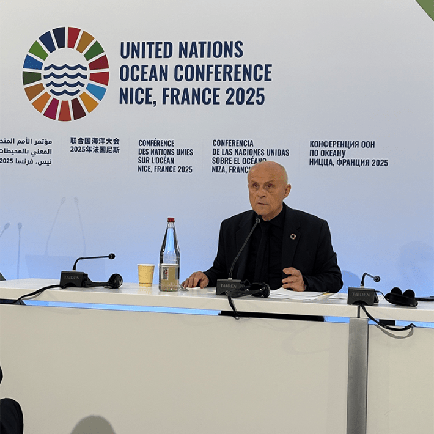

The sun was setting on the ocean, but the voice of Whaia was rising. The singer from New Zealand, rooted in Maori and Pasifika ancestry, was lifting our spirits with incantations that soared into wordless melodies that crested and fell like ocean waves. The spell was sustained by Scottish sound artist Brian d’Souza, performing under the name Auntie Flo, conjuring the sea in electronic, undulating soundscapes.
I was among listeners in Nice, France, in the Theatre de Verdure, an outdoor amphitheater on the coast of the Mediterranean Sea. It was the first evening of the United Nations Ocean Conference, a five-day gathering of world dignitaries, conservationists, scientists, and academics, meeting and sharing plans to conserve our troubled oceans. For the five days, Theatre de Verdure was known as Nautilus Village. In collaboration with the United Nations and the city of Nice, Nautilus hosted music, films, and discussion panels under the Côte d’Azur sky.
The Indigenous singer and sound artist were not headliners at the conference. But their evocation of our innate connection to the ocean was a theme that ran through the heart of its speeches and conversations.
“The ocean is the lifeblood of our planet,” Antonio Guterres, United Nations Secretary-General, said in his opening remarks. “It produces half of the oxygen we breathe, nourishes billions of people, supports hundreds of millions of jobs, and underpins global trade. For many, the ocean is more than a source of food and livelihood. It shapes cultures, anchors identities, and feeds the soul.”
I appreciated that Guterres then went goth on the gathered.
The ocean is under siege, he said. “Fish populations are collapsing due to reckless illegal fishing and overexploitation. Climate change is driving ocean acidification and heating—destroying coral reefs, accelerating sea level rise, and threatening communities worldwide. And plastic pollution is choking marine life and infesting our food chain—ultimately ending up in our blood and even our brains. When we poison the ocean, we poison ourselves.”
“Those who contribute negligibly suffer the most,” said the prime minister of Tuvalu, a tiny Pacific island.
What was the source of the poison? “Its name is greed,” Guterres said. “Greed that sows doubt, denies science, distorts truth, rewards corruption, and destroys life for profit.”
There was another name for poison at the conference. Dignitaries were reluctant to mention it. But it was apparent to most everybody, and on occasion, speakers, shaking their heads and mumbling in resigned desperation, did let the name slip: the United States.
The U.S. had a negligible presence at the conference. Trump administration plans to fuel up oceangoing heavy equipment to mine seabeds for minerals, along with strafing public budgets for ocean and climate change research, were black smudges on the restorative blue vision of the conference.
Ninety-five countries signed a global treaty to reduce plastic pollution in the ocean. The U.S. produces the most plastic waste on the planet, 40 million tons annually, 20 percent of which spends its eternal days in the entrails of the ocean. The U.S. did not sign the plastics treaty.
Fifty countries and the European Union have ratified the “High Seas Treaty,” an ambitious plan to protect 30 percent of the ocean by 2030 (2.8 percent is protected now). The treaty would bind countries to enter an agreement to protect the ocean under plans that transcend national borders. With 60 signatories, the High Seas Treaty would be implemented by the United Nations. The U.S. did not ratify. So far, neither have China and India.
“It’s considerably difficult to work on the ocean right now when the United States has withdrawn from almost everything,” Olivier Poivre D'Arvor, the special envoy of the French Republic, said during his wrap-up of the conference to the press. (He spoke in French; I’m quoting the English translator I heard in headphones.)
Difficult because, as we know, the U.S. is one of the three industrial powerhouses that blast most of the greenhouse gases into the atmosphere, whose fallout is unraveling the ecological health of the ocean. “It’s suffering from high fever and now we see oceans under the threat of dying—we are simply condemned to work together collectively,” said Jean-Noël Barrot, France’s Minister for Foreign Affairs, in an impressively impassioned speech.

THE TWO CULTURES: During his wrap-up of the ocean conference, Olivier Poivre D'Arvor, the special envoy of the French Republic, compared scientists fleeing the U.S. today to artists coming to France in the early 20th century in search of freedom. Photo by Kevin Berger.
Indeed, the participation of industrial giants like the U.S., China, and India in international efforts to nurse the ocean back to health are paramount. Without them, small countries, especially island nations, can do little but canvass for international funds to build barricades to stem the rising sea. When it comes to the causes of global warming, and oceans storming island shores, “Those who contribute negligibly suffer the most,” said Feleti Teo, prime minister of Tuvalu, a tiny country of nine islands, located between Hawaii and Australia, often seen as a microcosm of what dire climate change looks like now.
Special Envoy Poivre D'Arvor is a cultural man of presence in France: a novelist, literary scholar, theater producer, and French ambassador for maritime matters around the world; he has been the president of France’s National Navy Museum for the past decade. “The real damage in the U.S. is to science culture,” he said. He added that American scientists were coming to France in search of the “same kind of freedom that American artists once did.”
I assume Poivre D'Arvor was referring to Black Americans fleeing Jim Crow laws in the first half of the 20th century, such as jazz artists Josephine Baker and Duke Ellington, writer Langston Hughes, and painter Loïs Mailou Jones. Who knows if scientists will now find the same receptive audiences in labs and universities? But it was a surprisingly poignant comparison.
Although the international effort to reverse the damage being done to the ocean is stymied by the absence of the U.S., “We can advance our progress without them,” Poive D’Arvor said defiantly. The High Seas Treaty is on the verge of being fully ratified without the U.S., and its implementation, Poive D’Arvor said, would be “a victory for science.” Referring to the Nice conference as a whole, he said, “We did what we had to do here.”
It’s easy to take a cynical view. All the good will and international plans at the conference can be capsized like a tiny sailboat by the hurricane of oil companies, plastic manufacturers, consumerism, and intransigent politicians.
Speaking as one person in attendance, though, I felt better about the world than I have in a long time. It was such a relief to have slipped as if through a magic door out of the oppressive climate of authoritarianism, ignorance, and us-versus-them hatred and fear. How amazing it was to be in a community of people of every race and creed—smart, considerate, dedicated people thinking beyond themselves. The incantatory spell of the singer Whaia wasn’t broken for five whole days. We were all connected by the spirit and redemption of the ocean. 
Lead art: Singer Whaia and sound artist Brian d’Souza on stage at the “Nautilus Village” during the United Nations Ocean Conference in Nice, France. Photo by Kevin Berger.